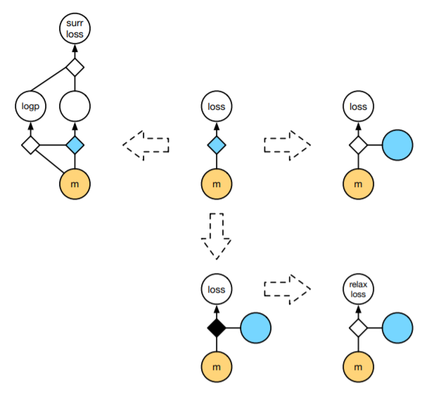
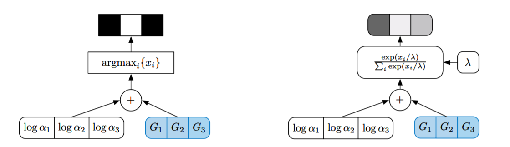

The central algorithm that makes modern deep learning (and all of machine learning as a consequence) tick is the backpropagation algorithm. Roughly, a model constructs a computational graph of all arithmetical operations performed during forward propagation, which is then traversed in reverse to compute gradients of the output loss function with respect to model parameters. Modern deep learning frameworks attempt to make this algorithm a first-class citizen, so-called differentiable programming by using automatic differentiation techniques.
However, a limitation of autodiff concerns nodes in the computational graph that do not represent a deterministic operation, but instead a conditional distribution on its parent nodes. For example, in a variational autoencoder the encoder takes the input to a probabilistic latent variable, whose samples provide the input to the subsequent decoder neural network. The loss function in this case is an expectation over all of the possible values of the stochastic latent node, and we expect for an end-to-end model to be trained via backpropagation in the same way as a normal deterministic autoencoder.
In this post, we will review stochastic gradient estimators. My motivation for this post is to understand how to perform Bayesian inference on probabilistic models of discrete counts data, which is a type of data I often deal with.
stochastic gradients
We often deal with loss functions that are an expectation over random variables. Such loss functions take the form
\[ \text{Loss}(\theta) = \mathbf{E}_{z\sim p(z|\theta)}[ f(z) ] \]
where \(z\) can be a stochastic node in the overall computational graph that has a distribution conditional on its parent nodes. We are often interested in computing the gradients \(\nabla_\theta\text{Loss}(\theta)\) of the loss function. But this is difficult, because computing the loss function exactly turns out to be intractable for many models. Indeed, for a variational autoencoder, the reconstruction loss is of the form
\[ \text{Loss}_{\text{vae,rc}}(x, \theta, \phi) = \mathbf{E}_{z\sim q(z|x;\theta)}[p(x|z;\phi)] \]
where both \(p, q\) are neural networks of arbitrary complexity.
The crux of the difficulty stems from the fact that since the latent variable the expectation is taken over depends on \(\theta\), one cannot just swap the order of the expectation and the gradient operator \(\nabla_\theta\). If one could bring \(\nabla_\theta\) into the expectation, i.e. we have an expectation of gradients, we can perform Monte-Carlo estimation to form stochastic gradient estimators. That is, our goal is to find functions \(\tilde{f}\) such that in expectation,
\[ \nabla_\theta \mathbf{E}_{z\sim p(z|\theta)}[ f(z) ] = \mathbf{E}_{\tilde{z}\sim\tilde{p}(z|\theta)}[\tilde{f}(\tilde{z})] \]
The right-side can be approximated by Monte-Carlo sums over \(\tilde{z}\)-samples. Hence, our goal for the next sections is to find estimators of this gradient that are unbiased. Often this is the easy step: the hard thing is to find estimators with reasonable variance.
A quick note: A theorem of Robbins-Monro guarantees that stochastic gradient descent with an unbiased gradient estimator will converge to a local optimum as long as the step sizes decay quadratically. Hence our estimators are actually useful for solving the problem at hand, which is optimizing complex models with latent variables using backpropagation.
score-function estimator
The basic score-function/REINFORCE estimator is derived by noticing that by the logarithmic derivative, \(p(z|\theta)\cdot\nabla_\theta\log{p(z|\theta)} = \nabla_\theta p(z|\theta)\). Hence,
\[ \begin{align} \nabla_\theta \mathbf{E}_{z\sim p(z|\theta)}[ f(z) ] &= \int_z \nabla_\theta (f(z)\cdot p(z|\theta)) \\ &= \int_z f(z) p(z|\theta)\nabla_\theta\log{p(z|\theta)} \\ &= \mathbf{E}_{z\sim p(z|\theta)}[f(z)\nabla_\theta\log{p(z|\theta)}] \end{align} \]
This gives the score-function estimator
\[ f_{\text{SF}}(z)=f(z)\cdot\nabla_\theta\log{p(z|\theta)} \]
In a modern deep learning framework, the above loss function would be given by
def loss(p, f):
# Here, p depends on parameters
z = p.sample()
with torch.no_grad():
# Block function from producing a gradient
fz_nograd = f(z)
mc_loss = fz_nograd * p.log_prob(z)
return mc_lossIt is an exercise to show the well-known identity \(\mathbf{E}_{z\sim p(z|\theta)}[\nabla_\theta\log{p(z|\theta)}] = 0\). This implies that for any \(c\in\mathbf{R}\), the estimator \((f(z)-c)\cdot\nabla_\theta\log{p(z|\theta)}\) is also unbiased. However, if \(c=c(z)\) depends on the sampled value \(z\sim p(z|\theta)\), there is no guarantee that the resulting estimator is unbiased:
\[ \mathbf{E}_{z\sim p(z|\theta)}[(f(z)-c(z))\nabla_\theta\log{p(z|\theta)}] \neq \nabla_\theta \mathbf{E}_{z\sim p(z|\theta)}[ f(z) ] \]
Indeed, the above estimator is biased by the expectation \(\mathbf{E}_{z\sim p(z|\theta)}[c(z)\nabla_\theta\log{p(z|\theta)}]\), so by adding this mean we get a new unbiased gradient estimator
\[ f_{\text{SF},c}(z) = (f(z)-c(z))\nabla_\theta\log{p(z|\theta)} + \mathbf{E}_{z\sim p(z|\theta)}[c(z)\nabla_\theta\log{p(z|\theta)}] \]
In general, for any function of the random variable \(z\), say \(\zeta(z)\), the estimator
\[ f_{\text{SF},\zeta}(z) = f_{\text{SF}}(z) - \zeta(z) + \mathbf{E}_{z\sim p(z|\theta)}[\zeta(z)] \]
is an unbiased gradient estimator. Here \(\zeta(z)\) is called a control variate. The goal is to choose control variates that lower the variance of the resulting estimator. Can we actually do this? Note that the variance of the control variate estimator \(f_{\text{SF},\zeta}\) is given by
\[ \text{Var}(f_{\text{SF},\zeta}) = \text{Var}(f_{\text{SF}}) + \text{Var}(\zeta) - 2 \text{Cov}(f_{\text{SF}}, \zeta) \]
If we can get \(\text{Var}(\zeta) < 2 \text{Cov}(f_{\text{SF}}, \zeta)\) then consequently \(\text{Var}(f_{\text{SF},\zeta}) < \text{Var}(f_{\text{SF}})\) and so our control variate estimator is an unbiased gradient estimator of lower variance!
reparameterization trick
Notice that the score-function estimator depends only on the differentiability of \(\log{p(z|\theta)}\) with respect to \(\theta\), and not on the differentiability of \(f\). In particular, this gradient estimator applies also when \(z\) is given by a discrete latent variable. However, without proper control variates, the variance of the score-function estimator \(f_{\text{SF}}\) might be prohibitive, forcing us to seek out better gradient estimators. Intuitively, the poor performance of \(f_\text{SF}\) stems from the fact that it doesn’t take into account the interaction between \(f\) and \(\theta\).
But sometimes, the distribution of the latent variable \(p(z|\theta)\) can be decomposed into a differentiable function \(g(\theta, \epsilon)\) of the parameters and a fixed sampling distribution \(\epsilon\sim p(\epsilon)\). As a concrete example, suppose \(p(z|\theta)\) is given by a normal distribution \(\text{Normal}(z|\mu,\sigma)\). Then a sample \(z\sim\text{Normal}(\mu,\sigma)\) is equivalent to \(g(\epsilon) = \mu + \sigma\cdot\epsilon\) where \(\epsilon\sim\text{Normal}(0, 1)\).
As a consequence, we have the identity of gradients
\[ \begin{align} \nabla_\theta\mathbf{E}_{z\sim p(z|\theta)}[f(z)] &= \nabla_\theta\mathbf{E}_{\epsilon\sim p(\epsilon)}[f(g(\theta, \epsilon))] \\ &= \mathbf{E}_{\epsilon\sim p(\epsilon)}[\nabla_\theta f(g(\theta, \epsilon))] \end{align} \]
which gives a new gradient estimator \(f_\text{reparam}(\epsilon) = \nabla_\theta f(g(\theta, \epsilon))\), the reparameterization gradient. Since this estimator takes into account the interaction between \(f\) and \(\theta\), the reparameterization gradient tends to achieve lower variance than the score-function estimator. This seems good, but the tradeoff is that our distributions \(p(z|\theta)\) need to be decomposed into a deterministic function of a simpler base distribution that does not depend on the parameters we’re optimizing. This is often tricky or impossible to do.
An example of writing out a reparameterized sampling distribution is given by the \(\text{Normal}(\mu,\sigma)\) distribution.
class Normal(Distribution):
def __init__(self, mu, sigma):
self.mu = mu
self.sigma = sigma
def sample(self):
epsilon = torch.randn()
return self.mu + self.sigma * epsilon
def loss(p, f):
z = p.sample()
return f(z) The above is entirely backpropagatable, so any model with this normal distribution in it can sample with impunity. Here, the normal distribution (by virtue of its status as a stable distribution) can be decomposed into an affine transformation of a unit Gaussian. This is admittedly unusual among probability distributions– finding readily computable explicit reparameterizations is rare, and we often cannot apply this trick directly.
It’s a consequence of the universality of the uniform distribution that given any probability distribution, we can reparameterize sampling from it by sampling from a uniform and applying the inverse CDF of the distribution to it. While it is nice that we can always theoretically find a reparameterization to a uniform, in practice computing the inverse of the CDF can be computationally or analytically intractible. Could we compute a gradient estimator relying only on the CDF itself?
Let \(z = F^{-1}_\theta(\epsilon)\sim p(z|\theta)\) where \(\epsilon\sim\text{Uniform}(0,1)\) and \(F_\theta\) is the CDF of \(p\). Then we can compute the reparameterization gradient as
\[ \begin{align} \nabla_\theta\mathbf{E}_{z\sim p(z|\theta)}[f(z)] &= \nabla_\theta\mathbf{E}_{\epsilon\sim \text{Uniform}(0,1)}[f(F^{-1}_\theta(\epsilon))] \\ &= \mathbf{E}_{\epsilon\sim \text{Uniform}(0,1)}[\nabla_\theta f(F^{-1}_\theta(\epsilon))] \\ &= \mathbf{E}_{\epsilon\sim \text{Uniform}(0,1)}[\nabla_z f(z) \nabla_\theta F^{-1}_\theta(\epsilon))] \\ &= \mathbf{E}_{\epsilon\sim \text{Uniform}(0,1)}[\nabla_z f(z) \nabla_\theta z] \end{align} \]
All is fine and good, but what the heck is \(\nabla_\theta z\)? We can approach this by implicitly differentiating the equation \(F_\theta(z)=\epsilon\), giving
\[ \begin{align} 0 &= \text{grad}_\theta[\epsilon] \\ &= \text{grad}_\theta[F_\theta(z)] \\ &= \nabla_\theta F_\theta(z) + \nabla_z F_\theta(z) \nabla_\theta z \end{align} \]
which implies
\[ \nabla_\theta z = -(\nabla_z F_\theta(z))^{-1}\nabla_\theta F_\theta(z) \]
This entire process gives us a way to compute a gradient estimator without inverting the CDF. This is the implicit reparameterization gradient of Figurnov-Mohamed-Mnih.
relaxations
The previous gradient estimators assumed that either \(p(z|\theta)\) was differentiable with respect to \(\theta\) or that \(f\) was differentiable and the random variable \(z\) could be reparameterized via a differentiable transformation \(g(\theta, \epsilon)\). The computational graphs represented by these gradient estimators is given by the first row of the following diagram:

In the diagrams above, the blue represents stochastic nodes– that is, nodes where a sampling process is performed. These nodes are often impossible to backpropagate through, so reparameterization tricks focus on “creating a differentiable path”, bypassing the sampling process.
However, in many situations (especially those involving discrete latent variables) reparameterization can be done only up to a non-differentiable function. An example of such is given by the Gumbel-max trick, which we will discuss. This situation is described by the bottom-row of the diagram. What are we to do in this situation?
Using a statistical-mechanical trick used throughout the machine learning literature, we will use a temperature scaling to relax the non-differentiable node into a differentiable one approximating the original reparameterization. These relaxations are essential to the literature on inference over discrete latent variables.
gumbel-softmax trick
Now let’s describe the Gumbel-softmax relaxation. The goal of this trick is to differentiably sample from a categorical distribution– for now, let’s just focus on sampling in the first place. Let \([\pi_1,...,\pi_k]\) describe a point in the embedded unit simplex
\[ \Delta^{k-1} = \left\{(\pi_1,...,\pi_k) \middle| \sum_{i=1}^k \pi_i = 1 \right\} \subset \mathbf{R}^k \]
and let \(z\sim\text{Categorical}(\pi_1,...,\pi_k)\) be a sample from the discrete categorical distribution on the \(\pi\). If we think about the computational graph described by this sample, there isn’t a way for the gradient to propagate through. However, there is a clever trick for reparameterizing the \(\text{Categorical}(\pi_1,...,\pi_k)\) distribution to something of the form in the reparameterization gradient section above.
Suppose that our simplex point \([\pi_1,...,\pi_k]\) is instead described by a unnormalized list of logits \([\alpha_1,...,\alpha_k]\)– that is, \(\alpha_i\in\mathbf{R}\) generally, and we retrieve the \(\pi_i\) by the softmax
\[ \pi_j = \frac{\alpha_j}{\sum_{i=1}^k \alpha_i} \]
Then the Gumbel-max trick is the following reparameterization of the \(\text{Categorical}(\pi_1,...,\pi_k)\) distribution: Sample iid. samples \(z_i\sim\text{Gumbel}(0,1)\) and add the samples to the logits \(z_i + \log{\alpha_i}\). Then
\[ z = \text{arg}\max_{i=1..k}\left\{ z_i + \log{\alpha_i} \right\} \]
is a sample from \(\text{Categorical}(\pi_1,...,\pi_k)\).
Proof: Proving this is a straightforward, if not tedious exercise from the definition of the Gumbel distribution. Let
\[ p(x; \mu, \beta) = \frac{1}{\beta}e^{-z-e^{-z}} \text{ where } z = \frac{x - \mu}{\beta}\]
be the pdf of the \(\text{Gumbel}(\mu, \beta)\) distribution. From this one can compute that the CDF of the \(\text{Gumbel}(0,1)\) is given by
\[ \text{cdf}(z) = e^{-e^{-z}} \]
and hence for samples \(z_i + \log{\alpha_i}\sim\text{Gumbel}(\log{\alpha_i}, 1)\), we find that
\[ \text{cdf}_{\text{shifted},\alpha_i}(z) = e^{-e^{-(z-\log{\alpha_i})}} \]
is the CDF of the \(\text{Gumbel}(\log{\alpha_i}, 1)\). We compute that
\[ \begin{align} \text{Pr}\left\{\ell=\text{arg}\max_{i=1..k}\left\{z_i + \log{\alpha_i}\right\}\middle| z_\ell\right\} &= \prod_{\ell'\neq\ell} \text{cdf}_{\text{shifted},\alpha_{\ell'}}(z_\ell + \log{\alpha_\ell}) \\ &= \prod_{\ell'\neq\ell} e^{-e^{-(z_\ell + \log{\alpha_\ell} - \log{\alpha_{\ell'}})}} \end{align} \]
From here it’s a calculus exercise to compute
\[ \text{Pr}\left\{\ell=\text{arg}\max_{i=1..k}\left\{z_i + \log{\alpha_i}\right\}\right\} = \int \prod_{\ell'\neq\ell} e^{-e^{-(z_\ell + \log{\alpha_\ell} - \log{\alpha_{\ell'}})}}\cdot\text{Gumbel}(\log{\alpha_\ell}, 1) dz_\ell \]
which ends up being
\[ \frac{1}{1 + \sum_{\ell'\neq\ell} e^{\log{\left(\frac{\alpha_\ell}{\alpha_{\ell'}}\right)}}} = \frac{\alpha_\ell}{\sum_{\ell'} \alpha_{\ell'}} = \pi_\ell \]
as desired.
However, this sampler is not differentiable because of the \(\text{argmax}\). So we cannot use the Gumbel-max trick by itself as a backpropagatable reparameterization of the \(\text{Categorical}(\pi_1,...\pi_k)\) distribution. The final trick is realizing that the \(\text{argmax}\) can be relaxed as a softmax with temperature.
We relax the \(\text{argmax}\) to return probability vectors in the simplex \(\Delta^{k-1}\), and call the resulting Gumbel-softmax distribution a \(\text{Concrete}(\pi_1,...,\pi_k, \lambda)\) distribution. To sample from a \(\text{Concrete}(\pi_1,...,\pi_k, \lambda)\) random variable, we sample iid. \(z_i\sim\text{Gumbel}(0,1)\) and set
\[ x_j = \frac{\exp{\left((z_j + \log{\alpha_j}) / \lambda\right)}}{\sum_{i=1}^k \exp{((z_i + \log{\alpha_i}) / \lambda)}} \]
The vector \(z=[x_1,...,x_k]\in\Delta^{k-1}\) is hence a sample \(z\sim\text{Concrete}(\pi_1,...,\pi_k, \lambda)\).
We note that as \(\lambda\to 0\) (the temperature), the \(\text{softmax}_\lambda\rightsquigarrow\text{argmax}\). So this is indeed a continous relaxation of a discrete random variable. Amazingly, on the simplex \(\Delta^{k-1}\) the pdf of \(\text{Concrete}(\pi_1,...,\pi_k,\lambda)\) has a closed-form analytic density:
\[ p_{\pi,\lambda}(x) = (k-1)!\lambda^{k-1}\prod_{j=1}^k\left(\frac{\alpha_j x_j^{-\lambda-1}}{\sum_{i=1}^k \alpha_i x_i^{-\lambda}}\right) \]
A computational graph of the resulting reparameterizations can be found in the original paper of Maddison-Mnih-Teh.

variational inference
A canonical application of stochastic gradient estimators is in approximate inference of probabilistic latent variable models. Suppose we have such a model, described by a joint distribution \(p(x,z;\theta)\). Here \(x\) is the set of observed variables, \(z\) are latent variables, and \(\theta\) is the collection of trainable parameters to the model. For instance, the model could be described by a collection of RNNs where the choice of neural network to apply is determined by a latent categorical variable.
Our goal is two-fold: 1) determine the parameters \(\theta\) of the model that best describes the data given, and 2) perform posterior inference over the data, that is, compute the distribution over latent variables \(p(z|x;\theta)\). These two objectives are intricately related– indeed, evaluating the log marginal likelihoods \(\log{p(x;\theta)}\) is equivalent to computing the posterior
\[ p(z|x;\theta) = \frac{p(x,z;\theta)}{p(x;\theta)} \]
Let’s assume here that the joint \(p(x,z;\theta)\) model is differentiable with respect to \(\theta\). Given a training dataset \(\mathcal{D}_\text{train}=\{x_i\}_{i=1..n}\), we are tasked with optimizing for \(\theta\) by maximizing the log marginal
\[ \text{arg}\max_\theta{L(\theta)} = \sum_{i=1}^N \log{p(x_i;\theta)} = \sum_{i=1}^N \log{\sum_z p(x_i,z;\theta)} \]
We can iteratively update the parameters via gradient descent. It is an exercise to show that the gradient of this expression can be given by
\[ \nabla_\theta L(\theta) = \sum_{i=1}^N \mathbf{E}_{z\sim p(z|x_i;\theta)}[\nabla_\theta\log{p(x_i,z;\theta)}] \]
Here we see the intricate interrelationship between posterior inference and model training– the loss is a sum of expectations over the posterior. The key to this optimization process is the computability of the posterior. In the case where we can compute the posterior exactly given any \(\theta\), we can perform an iterative algorithm that converges to the ideal model parameters \(\theta_\text{MLE}\).
First we initialize the parameters \(\theta^{(0)}\) randomly. Suppose we are at the \(i\)th step of the iteration, so we have parameters \(\theta^{(i)}\) computed. By assumption, we can compute the exact posterior \(p(z|x;\theta^{(i)})\), so we turn our attention to the likelihood expression
\[ Q(\theta, \theta^{(i)}) = \sum_{i=1}^N \mathbf{E}_{z\sim p(z|x;\theta^{(i)})}[\log{p(x_i,z;\theta)}] \]
Note: In this expression, the posterior under the expectation has fixed \(\theta\)-parameters, while here the only optimizable parameter is the \(\theta\) inside the log-joint. We find the next parameters \(\theta^{(i+1)}\) by optimizing this expression
\[ \theta^{(i+1)} = \text{arg}\max_\theta Q(\theta, \theta^{(i)}) \]
We then repeat this until convergence of the \(\theta\). This is the famed expectation-maximization (EM) algorithm. We see that the gradient of \(Q(\theta, \theta^{(i)})\) is given by
\[ \nabla_\theta Q(\theta, \theta^{(i)}) = \sum_{i=1}^N \mathbf{E}_{z\sim p(z|x;\theta^{(i)})}[\nabla_\theta\log{p(x_i,z;\theta)}] \]
which is, in the limit, the gradient expression above for \(\nabla_\theta L(\theta)\). We see that if we can compute the posteriors exactly, the EM algorithm converges to the right parameters: \(\theta^{(i)}\to\theta_\text{MLE}\).
However, what if we cannot exactly compute the posterior \(p(z|x;\theta)\)? The above algorithm doesn’t apply, and we need to appeal to other techniques for optimizing the log marginal likelihood. The idea is to approximate the posterior with a variational family of distributions \(q(z;\lambda)\) parameterized by \(\lambda\). When \(q(z;\lambda)\simeq p(z|x;\theta)\), we can proceed with the EM algorithm above to optimize the log marginal. The power and flexibility of this approach comes from 1) the affinity \(\simeq\) can be described in many ways, and hence as long as we can exactly express the family of posteriors \(q(z;\lambda)\), our posteriors \(p(z|x;\theta)\) can be given in virtually any format we want, and 2) we can make our family of distributions as arbitrarily simple or complex as we want.
However, just swapping out the exact posterior for \(q(z;\lambda)\) in \(Q(\theta, \theta^{(i)})\) above produces a bias. Could we compute this bias? Sure– though it is more convenient to directly reason about computing the log marginal \(\log{p(x;\theta)}\) directly in terms of expectations over \(q(z;\lambda)\):
\[ \log{p(x;\theta)} = \mathbf{E}_{z\sim q(z;\lambda)}\left[\log{\frac{p(x,z;\theta)}{q(z;\lambda)}}\right] + D_{\text{KL}}(q(z;\lambda)|| p(z|x;\theta)) \]
Since the rightmost term is a KL-divergence, it is always non-negative. Calling the expectation term the evidence lower-bound objective (ELBO), we see that
\[ \log{p(x;\theta)} \ge \text{ELBO}(\theta, \lambda; x) = \mathbf{E}_{z\sim q(z;\lambda)}\left[\log{\frac{p(x,z;\theta)}{q(z;\lambda)}}\right] \]
is a lower bound for the log-marginal. If the variational family \(q(z;\lambda)\) contains the posterior \(p(z|x;\theta)\), then we can optimize the ELBO (in \(\lambda\)) such that maximizing the ELBO is equivalent to maximizing the log marginal. Otherwise, there will be a nontrivial gap that optimization will never cause to vanish. Nonetheless, with an expressive variational family, optimizing the ELBO can find good model parameters \(\theta\) in the same iterative way as the EM algorithm above. This forms the basis of variational inference of probabilistic latent variable models.
Key to this are the gradient ascent updates
\[ \lambda^{(i+1)} \leftarrow \lambda^{(i)} + \eta_\lambda \nabla_\lambda \mathbf{E}_{z\sim q(z;\lambda)}\left[\log{\frac{p(x,z;\theta)}{q(z;\lambda)}}\right] \]
and
\[ \theta^{(i+1)} \leftarrow \theta^{(i)} + \eta_\theta \nabla_\theta \mathbf{E}_{z\sim q(z;\lambda)}\left[\log{p(x,z;\theta)}\right] \]
for optimizing the ELBO above. In this stochastic variational inference update step, \(x\) is randomly sampled from \(\mathcal{D}_\text{train}\), and computing the gradient of the first expectation often requires us to use the gradient estimators above.
closing
To summarize, we presented the problem of producing low-variance stochastic gradient estimators of expectations over latent random variables. Given a graphical structure, we can use the score-function estimator (with control variates) or if we’re lucky, a reparameterization to a simpler distribution as estimators when the “propagation path” for the gradient is differentiable. If we’re blocked by a non-differentiable loss, we showed that we could “relax” the loss function to be approximately differentiable, up to a temperature scale.
Finally, we described the prototypical use-case for stochastic gradient estimators: approximate variational inference of latent variable models. In the next post, we’ll put this to use in training a discrete variational autoencoder.